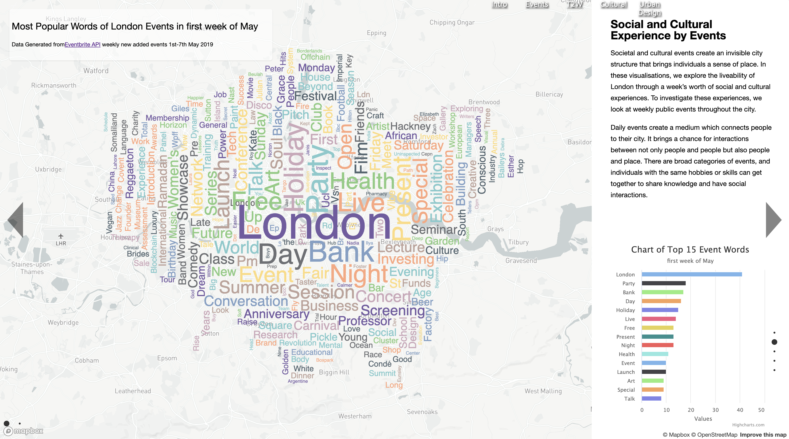
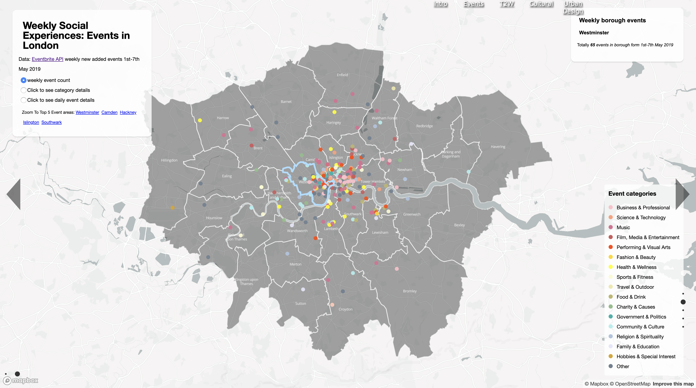
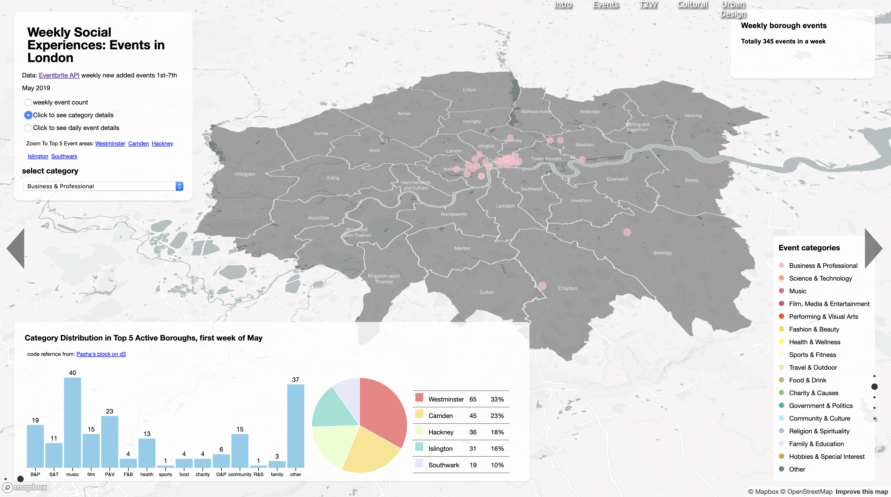
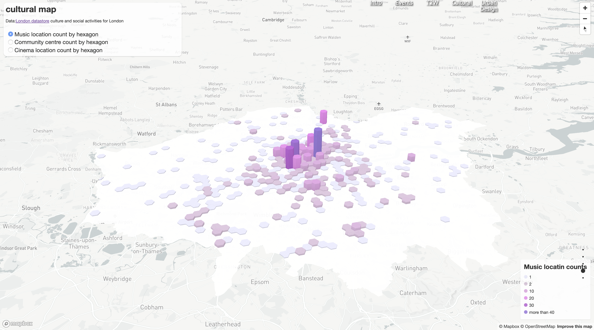
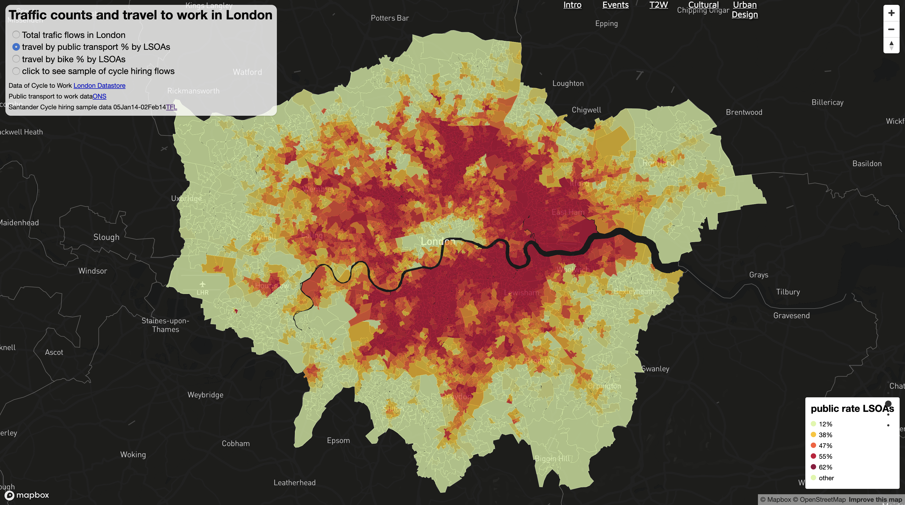
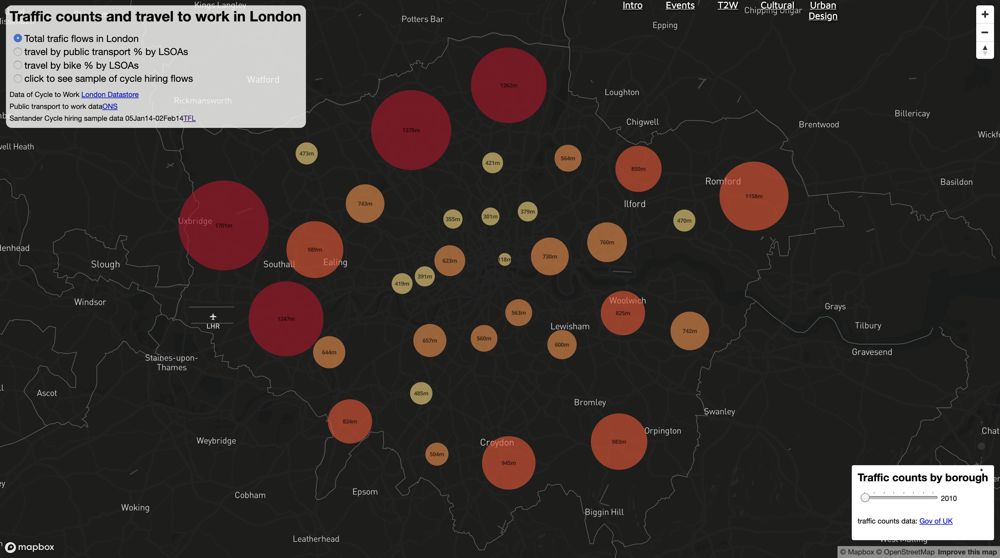
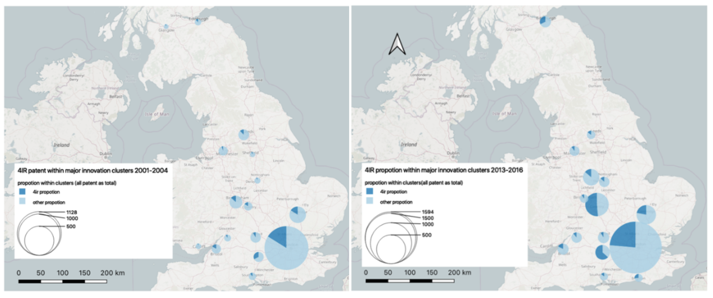

More details about my Interactive Map (Please use Chrome) summer0326.github.io
"Don’t aim for success if you want it; just do what you love and believe in, and it will come naturally"
Photoshop, Python, HTML, QGIS, Processing, Auto CAD, Mapbox, SketchUp, InDesign, MS Office.
University College London
Master of Research
University of Liverpool | XJTLU
2 + 2 Programme
Bureau Verritas
• Analysed and synthesised information and data to write the daily site report.
• Updated and tracked the work status of engineering drawings/plans of each subproject through BIM360.
Northwest Research Institute of Enginering Investigation & Design
• Offered positive suggestions during the participation of the whole planning process. For example, refering European’s
advanced experience of 'Green traffic', 'Healthy pedestrian system', and 'Bicycle priority' to improve the draft plan
A design project for the University of Liverpool in the Greening Campus Initiative
• Worked as a member of youth delegation to participate the global round table discussion. Created the video project of “4IR
and Sustainable Development Goals for Business" which critically discuss the opportunities and challenges in the new era
of “industry 4.0”
QGIS/ArcGIS/Mapbox
Photoshop
SketchUp
Python
HTML
AutoCAD




Experience of London: Culture and Social
For more details please click my web of the Interactive Map (Please use Chrome) summer0326.github.io
Societal and cultural interactions are intangible features that bring individuals a sense of place and strengthen social cohesion. Daily events create a medium which connects people to their city. It allows for interactions between not only people but also people and place. There are many types of events, and individuals with the same hobbies or skills can gather to share knowledge and interact socially.
In these visualisations, we explore the liveability of London through a week’s worth of social and cultural experiences. We investigate these experiences through weekly public events throughout the city.
Mapbox GL is used to visualise the spatial data through maps, Echarts to build the word cloud map, and D3, Highcharts, and AnyChart were used to build interactive charts, all of which combined to create the story of events in London.


Travel to work-London (demo)

4IR Technological innovation activities in Great Britain
This is a screenshot of my dissertation, which explores the spatial evolution of the innovation activities in the era of Fourth Industrial Revolution, for more details please contact me with the email.
yijinzhao2016@163.com
No.9 Tai Bai South Road, Yanta District
Postal 710065
XI'AN, SHAANXI.
13201712739